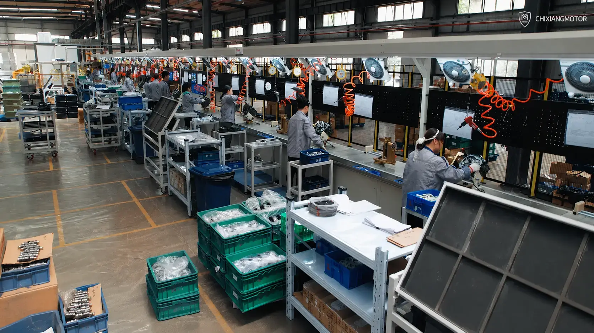
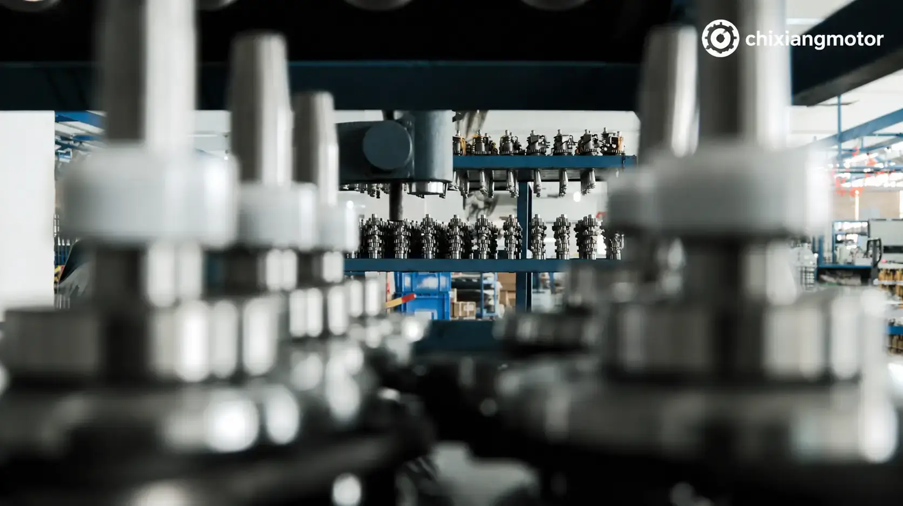
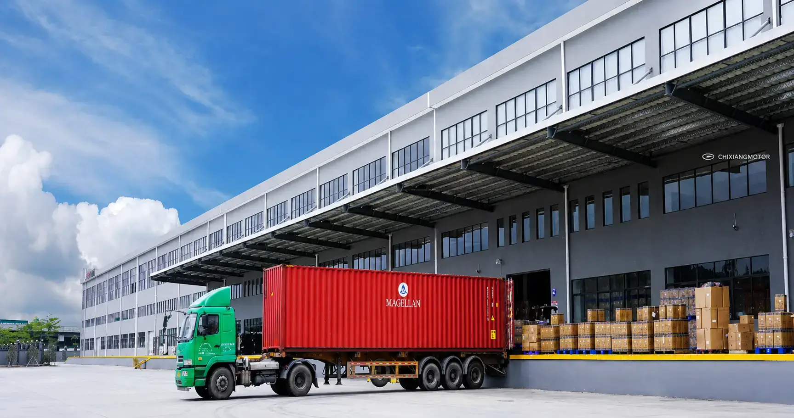
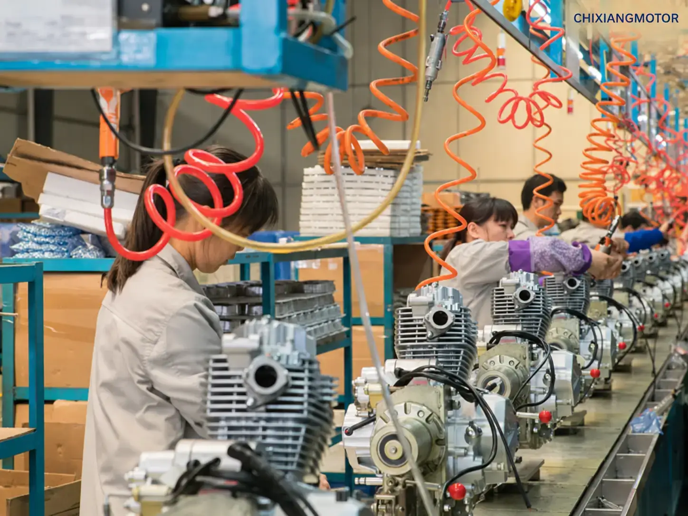
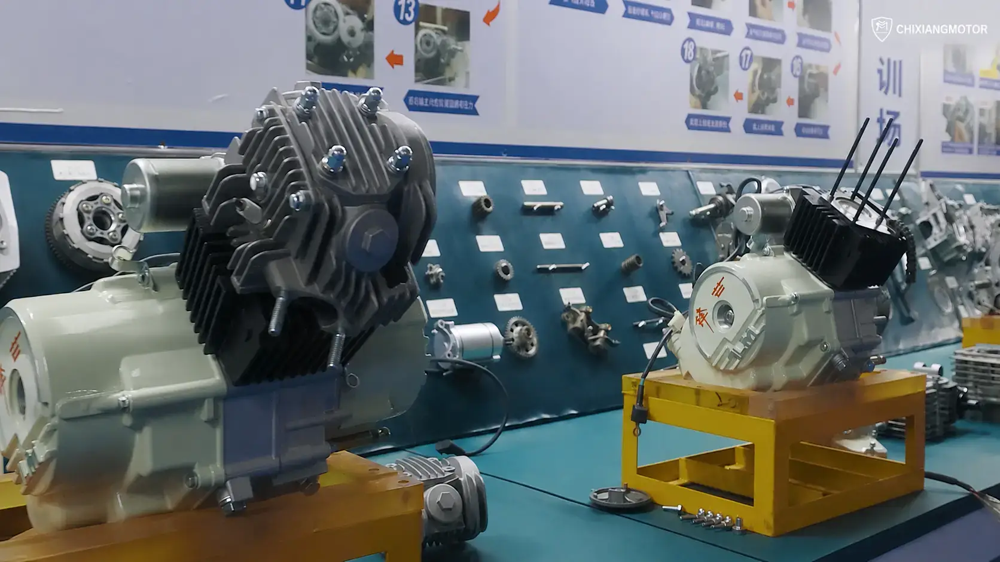
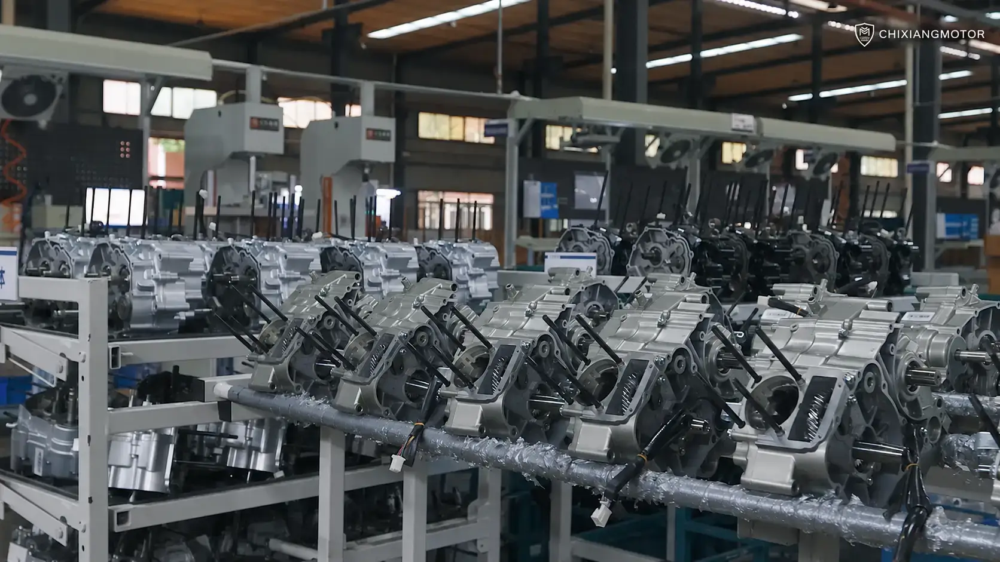
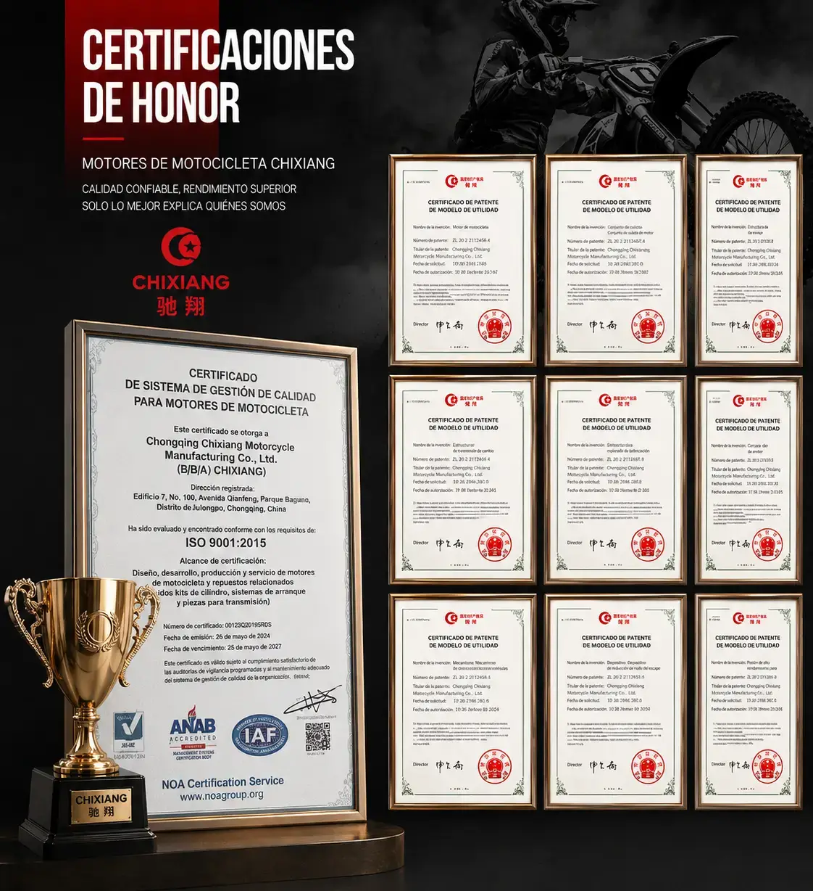

Chongqing Chixiang Motorcycle Manufacturing Co., Ltd. foi fundada em 2003 e fabrica motores de moto, motores para triciclo de carga, motocicletas completas e pecas.
Nossa fabrica fica em Chongqing, China, com linhas de montagem, equipamentos de teste, controle de qualidade e capacidade mensal acima de 8,000 motores.
Atendemos distribuidores no Brasil, America do Sul, Oriente Medio, Asia Central, Russia, Sudeste Asiatico e Africa com suporte OEM/ODM.

Uma fabrica pratica para compradores que precisam de entrega estavel, especificacoes consistentes e suporte tecnico.





Controlamos selecao de pecas, montagem, testes e embalagem para reduzir riscos de pos-venda.
Component matching before assembly.
Repeatable production procedures.
Engine performance checks before shipment.
Export packing for long-distance transport.

Documentos de certificacao, inspecao padronizada e controle de produto ajudam compradores a verificar a capacidade antes do envio.
Enviar consultaEnvie modelo, quantidade e pais de destino. Respondemos por WhatsApp ou email.